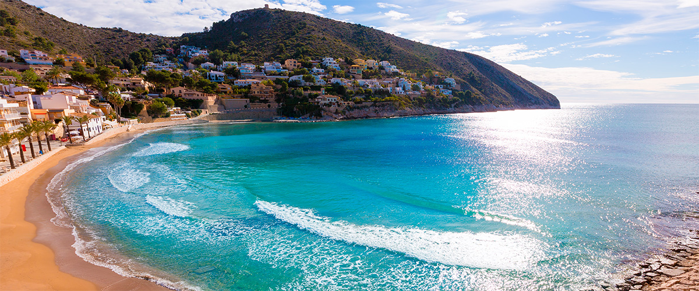

Welkom op mijn site over vakantie in Spanje. Dit jaar ga ik zelf Naar Moraira. Nu ben ik al bezig met het uitzoeken waar we naar toe kunnen tijdens onze vakantie.
Dit zorgt ervoor dat ik daar veel tijd en energie in steek ( wat ik niet geheel erg vind)
Maar ik kan ook goed begrijpen dat niet iedereen daar zin in heeft. Nu heb ik hier mijn ideeën en bevindingen opgezet. Zo kan een volgende die op vakantie gaat naar Moraira via 1 site vinden wat er te doen is met en zonder kinderen.

Lees hier om alles te lezen over het eten in Spanje.
Denia, Javea, Calpe en Altea zijn bekende en gezellige plaatsen langs de kust van de Costa Blanca en wie van drukte, shoppen en pretparken houdt zal zich uitstekend vermaken in Benidorm.
Ook de typisch Spaanse stad Alicante met haar mooie jachthaven, winkels en strand ligt binnen handbereik evenals de Sinaasappelstad Valencia (een uur en een kwartier rijden vanuit Moraira).
Hier vind u meer informatie over de omgeving van Moraira.
In Moraira en omgeving is genoeg te beleven. Je kan de verschillende stranden bezoeken. Ook is er een waterval in de buurt, wat prachtig is om te zien.
Er zijn ook verschillende kastelen te bezichtigen. En nog zoveel meer, daarover kan je hier meer over te weten komen.
Van de kust van de Middellandse Zee tot de grote bergketens in het binnenland ligt een prachtig en afwisselend landschap. Stranden, rijstvelden, zoutmijnen, bossen, ravijnen en verborgen kreken.
De mediterrane flora bestaat hier voornamelijk uit sinaasapppel-, citroen- en amandelbomen die allen prachtige bloesems en heerlijke geuren geven in het voorjaar.
Lees hier meer over de natuur en klimaat van Spanje.